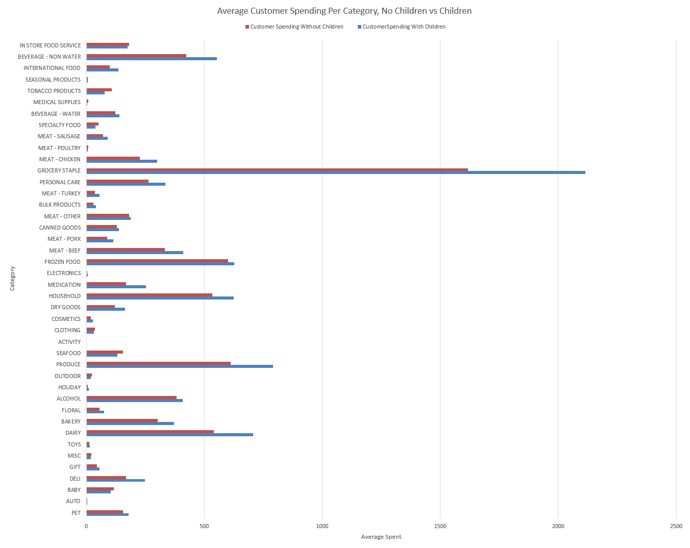

Demographic Factors that Effect Customer Engagement (Answer To Q1)
Click here to go to back.
Below is A Graph of the Average Total Spent (Over The 2 Years of Data Provided) Per Category Comparing Childfree Homes and Homes with Children

As you can see from the graph, over the course of almost 2 years there is a significant difference in how much households with children and households without children spend per category.
Some of the most notable differences are Child Homes spending more on Groceries, Dairy, Produce, and Beverages, while ChildFree Homes Spending
more on Food Service, Seafood, and Tabacoo Products. This is a trend of Child Homes spending more on necessities and Childfree Homes spending more on luxuries. One aditional note is that both homes spend
comparable amounts on alcohol.
A link to the code used to generate this dataset can be found here